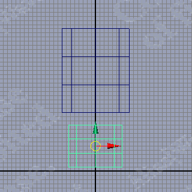

Maya PLE Character Model Tutorial Part 1
Modeling
The tutorial character is extremely simple: just cylinders of various dimensions arranged in a roughly bipedal human structure. No hands, no feet – they'd complicate the animation process and slow the tutorial. Just torso, arms, legs, and head. In addition, the segments of the figure will be unconnected, reducing the need for finicky mesh point weight adjustments (skin weight painting). Remember, this is a very no-frills tutorial.
1. Launch Maya PLE, select the Modeling editor from the Status Line drop-down menu, and set your workspace view to perspective wireframe. Set the Grid parameters to Length and Width = 50, Grid Lines Every 0.5 units, and Subdivisions = 2. Enable Snap to Grids.
2. In the main menu use Create>Polygon Primitives>Cylinder>OPTIONS (NOTE: OPTIONS is represented by the shadowed square to the right of the text menu item) to open the Polygon Cylinder Options dialog. Enter the values shown in FIG 2 and click Create. Change the name of the newly-created cylinder to torso. Move torso up to Translate Y=12.0
![[MCMT-02-CylSpecs]](images/mcmt-02-cylspecs.gif) FIG 2. Polygon Cylinder options |
3. Duplicate (Ctrl+d) the Cylinder and name the copy hips. Scale hips to Scale X=0.8, Scale Y = 0.5, Scale Z=0.8 and move it to Translate Y=3.0. At this point the bottom cap of cylinder hips should be located close to the origin. Use the grid to confirm this (FIG 3).

FIG 3. Position of the hips cylinder |
4. Duplicate torso and name the copy head. Scale head to Scale X=0.625, Scale Y=0.5, Scale Z=0.625, and move it up to Translate Y=22.0
5. Duplicate torso and name the copy R_thigh. Scale R_thigh to Scale X=0.5, Scale Y=1.125, Scale Z=0.5, and move it to Translate X= -3.0, Translate Y= -6.25
6. Duplicate R_thigh and name the copy L_thigh. Move L_thigh to Translate X=3.0
7. Duplicate R_thigh and name the copy R_calf. Scale R_calf to Scale X=0.35, Z= 0.35, and move to Translate Y= -18.0
8. Duplicate R_calf and name the copy L_calf. Move L_calf to Translate X=3.0
9. Duplicate torso and name the copy R_arm. Scale R_arm to Scale X=0.3, Scale Z=0.3, and move it to Translate X= -7.0
10. Duplicate R_arm and name the copy L_arm. Move L_arm to Translate X=7.0
11. Duplicate R_arm and rename the copy R_4arm. Scale R_4arm to Scale X=0.25, Scale Y=0.9, Scale X=0.25, and move down to Translate Y=1.5
12. Duplicate R_4arm and name the copy L_4arm. Move L_4arm to Translate X=7.0
The basic structure is done – time now to make it just a tad more "human" by adding a small "flex" to the segments.
Note: this section does not tell you to Select Torso and set Rotate X=-4, and Select Hips and Rotate X=4, However
based on Fig 4. I think it is obvious that it should be done.
13. Move head to Translate Z= -0.5
14. Select both R_arm & L_arm and set Translate Z= -0.5, Rotate X=4
15. Select both R_4arm & L_4arm and set Translate Z= -0.5, Rotate X= -4
16. Select both R_thigh & L_thigh and set Rotate X= -4
17. Select both R_calf & L_calf and set Rotate X=4
Your model cylinder citizen should resemble FIG 4.
![[MCMT-04-CylMan]](images/mcmt-04-cylman.gif) FIG 4. The completed model |
The next step is Rigging the model for skeletal animation.